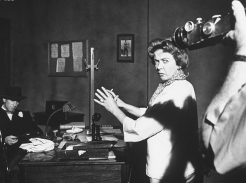
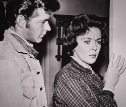
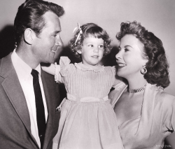
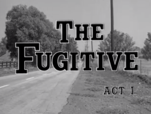

 To celebrate the memory of dear departed classic film champion and blogger Patricia Nolan-Hall, for "The Caftan Woman Blogathon", I am covering a time in the life and career of Ida Lupino that Paddy had touched upon in her writing a few years ago.
Paddy contributed an article to the collection of essays The Ida Lupino Files entitled Ida Lupino Directs The Fugitive And Creates Classic Television. Lupino directed three episodes of that television show, all in its first season—1963-'64. In her essay, Paddy summarizes these episodes for those of us not familiar with them. My essay will cover events in Lupino's life in the months prior to and after working on The Fugitive.
Background
At the time Lupino directed The Fugitive, she was in her mid-40s and at the height of the television-directing episode of her career. Television director was one of several incarnations Lupino went through during her nearly five decade in show business, including roles as actress, composer, writer, producer, and motion picture director. Over three decades earlier, Lupino had begun her film career in her native England at the age of fourteen, with lead roles in six films. Within a year, she was discovered by Hollywood, signed to a multi-year contract and moved across the Atlantic. Her acting career had ups and downs in the 1930s, but by the early 1940s she had become a big name thanks to her roles in films like The Light That Failed, They Drive By Night, and High Sierra.
For the next decade, she was a full-fledged movie star. Yet, as reporter Peter Bart described her later, she "was a movie star who hated stardom, a glamour queen who loathed glamour". Near the end of the 1940s, Lupino decided to shift away from acting towards the work she found more interesting. She started her own production company in partnership with then-husband Collier Young. She co-wrote and co-produced several successful low-budget pictures—and became the only woman director in Hollywood at the time.
By 1954, the popularity of television was revolutionizing the film industry. Lupino's company, The Filmakers, was a victim of the changing times. She then moved into television acting and writing, with occasional film roles added in. By the late 1950s, she and new husband Howard Duff had created a sitcom that they starred in, Mr. Adams and Eve, which had a brief run of popularity. The show was cancelled in 1958 after two seasons, and Lupino, now 40, decided again to move behind the scenes. She started directing television shows in late 1958 with Have Gun, Will Travel and soon became in-demand. She virtually gave up acting—aside from infrequent guest appearances on television.
1963-1964
This brings us to the year when Lupino became involved with The Fugitive, nearly five years into her television directing career.
Lupino began 1963 with work as both actor and director on Sam Benedict, a detective show starring Edmond O'Brien. O'Brien had worked with Lupino in her days as a movie producer-director, starring in two of her films a decade earlier—The Hitch-Hiker and The Bigamist. Now, Lupino acted with him on his television show as a guest star, and directed two other episodes. Also in the early months of 1963, Lupino directed two episodes of The Untouchables, plus appeared as a guest star on an episode of The Virginian.
Both of Lupino's guest acting appearances in early 1963 were alongside her husband, Howard Duff, who she frequently tried to work with. She and Duff had been married in late 1951 immediately after Lupino had obtained a divorce from Collier Young. Lupino gave birth to their daughter in the spring of 1952. By the next year, the Lupino-Duff marriage was in trouble—very public trouble. They had several prolonged separations that were much discussed in the press. With each one, divorce seemed more likely. Yet each time they reconciled—to the amazement of their friends.
By 1955, with their tempestuous relationship inspiring the theme of the sitcom they were then developing, the Lupino-Duff marriage appears to have stabilized. But once Mr. Adams and Eve was in the past, their troubles occasionally returned. The 1963-'64 period appears to have been relatively calm, as there were no indications in the press of any personal troubles between them, and the two appeared together on television frequently. For instance, aside from their acting appearances mentioned above, they were both guests of new host Johnny Carson on the Tonight Show in May, 1963.
Lupino and Duff also were business partners, with Lupino trying to replicate the success she had had as an independent producer with Collier Young and The Filmakers from 1949 to 1954. In late 1961, she and Duff formed Stanley Productions—named after her late father—to produce a thriller they had purchased entitled The Plotters. By May, 1963, this project was still in development, but clearly Lupino was pushing hard. An article in the Philadelphia Daily News quotes her:
My husband and I are now planning to make some films in the next couple of years. We are highly encouraged by the fact that the money men and producers seem to want to keep production here in the United States and are willing to put up money for low-budget pictures.
The story is the thing. About a year ago we bought a couple of books, including one called "The Plotters", which we hope to get into production next month.
Our company is a combination of a friend of ours named Fred Hamilton, who used to be a production executive at NBC, my husband, and me. They are the president and vice-president, in reverse order, and I’m treasurer. We call the company Stanley Productions, after my father. I’ll direct some of these pictures... but I’ll keep a hand in all the rest of them.
The setup that Lupino sketches here sounds virtually identical to that for The Filmakers from a decade prior. With her earlier company, Lupino similarly had two business partners—with one her husband—plus she directed some films and kept a hand in "all the rest".
At this same time, Louella Parsons wrote that Lupino and Duff aimed to launch a "full-scale production program of two movie scripts and three TV pilots", while simultaneously writing a children's book.
Alas, while Lupino discussed Stanley Productions into at least 1966 and pursued similar projects well into the 1970s, no new productions by Lupino ever materialized. It's not clear from the public record why her aim to again independently produce and direct films was stymied. Perhaps a hint is that, a few years later, Lupino wrote an essay (Me, Mother Directress) where she mentioned having turned down good opportunities to direct films because they would have to be produced overseas and she did not want to spend months away from her husband and daughter.
So with Stanley Productions unable to move forward, Lupino maintained her directing career with work in television. In late April, 1963, shortly before her Tonight Show appearance, Lupino signed to direct several episodes of the new series The Fugitive that would air on ABC-TV in the fall. Also for the 1963-'64 season, she signed to direct episodes of Mr. Novak, The Breaking Point, Dr. Kildare, Kraft Suspense Theater, and The Twilight Zone. This last one, where she directed the episode titled The Masks, is one of her most often cited and most well-regarded directorial efforts today. She also continued her writing, and, in collaboration with her younger cousin, Richard Lupino, sold a script to Alfred Hitchcock for his television show.
In addition to her busy directorial schedule and behind-the-scenes efforts on Stanley Productions, Lupino continued to dabble in acting, despite some possible insecurities about aging. Columnist Sidney Skolsky quoted her in August: "I’ve never gone through that frightening period of having been a glamor girl. To be a glamor girl and then lose your looks must mean a painful emotional transition."
Lupino was one of several celebrity guest stars, including husband Duff, who had small roles in an episode of Burke's Law aired on November 8, 1963. And she had a co-starring role in an episode of Kraft Suspense Theater, One Step Down, with Gena Rowlands and Leslie Nielsen, that aired the next week.
 A few days after that, November 19, the first of the episodes she directed for The Fugitive aired—Fatso. Two weeks later, with President Kennedy's assassination happening in the interim, her second directed episode of The Fugitive was shown—Glass Tightrope. Six weeks after that, her third and final one, The Garden House, aired on January 14, 1964.
Lupino's now most famous television directing effort—The Masks for The Twilight Zone—aired on March 30 to virtually no press notice. While that episode receives a lot of attention today, Lupino herself appears to have thought her work that season on The Fugitive and Mr. Novak was most worthy of recognition. The New York Daily News reported in September, 1963 that her ambition was to win an Emmy award for either of those shows. Furthermore, in an interview a decade later (published in People Will Talk by John Kobal), Lupino mentioned her work on The Fugitive, Mr. Novak and The Untouchables as work she especially enjoyed.
An anecdote published in July 1964, said that Lupino "will go to any lengths to get the effect she wants. She was directing a show that called for a breath-taking drive down a steep mountain road. With a stuntman doing the driving, Ida climbed into the back seat with a cameraman and gave running directions to both men during the hazardous drive. The brass at the studio, which objected strenuously to Ida's taking such an active part, breathed a sigh of relief when everyone came out unscathed."
After November, 1963, Lupino had no further acting appearance on television that season. But she did appear with her husband on the evening premiere of the game show You Don't Say on Jan. 7, 1964. She and Duff also appeared on another game show the next July called The Celebrity Game.
As the 1964-'65 television season opened, Lupino's work on The Fugitive was in the past—but new projects beckoned. She acted and directed on The Rogues, a well-received comedy caper show starring Lupino's old acting colleagues David Niven, Charles Boyer and Gig Young and produced by her ex-husband Collier Young. She directed some comedy shows with Gilligan's Island and Bewitched—and more.
But the biggest project, finally getting underway early in 1965, was to become the first feature film she had directed in over a decade, plus her first and only feature film that she directed for a major studio—the movie initially known as Mother Superior and later released as The Trouble With Angels, starring Rosalind Russell and Haley Mills. That, of course, marked the beginning of yet another episode in Ida Lupino's storied career and is a tale for another day.
Sources
- Newspapers.com archives for United States newspapers
- Me, Mother Directress, 1967 essay by Ida Lupino, as read in podcast Sass Mouth Dames, ep. 9
Further reading
- The Ida Lupino Files, edited by Letícia Magalhães, Cine Suffragette, 2020

Thank you for this informative entry and explaining its connection to Paddy. Lupino's TV career is expansive and I enjoyed learning the insights from this post.
Aurora
Posted by: Aurora | May 06, 2022 at 09:46 AM
When I wrote about THE BIGAMIST at my previous blog, Wide Screen World, I had said I couldn’t find anything that indicated a directorial “style” of Lupino’s. In response, Paddy had said: “Perhaps the most distinctive thing about Lupino’s films is the fact that they exist at all in the times she was working.” Good point.
Posted by: Rich | May 06, 2022 at 12:23 PM
@Aurora Thanks!
@Rich Indeed. Lupino's style was quite varied as she covered a lot of different topics, genres, styles--like many of the best directors of the classic Hollywood era. And, as Paddy said, the fact that she made it happen is remarkable.
Posted by: P.M.Bryant | May 06, 2022 at 01:31 PM
Thank you for this informative post. Paddy sure would have loved it. And you are so right in calling her a champion, not just a champion blogger herself, but a generous person who championed her fellow bloggers.
Posted by: Marsha Collock | May 06, 2022 at 03:37 PM
I really think Paddy would appreciate this post. She was a champion of Ida Lupino's work as a director, both in film and in television. And Paddy was right as usual. Ida was a remarkable director, and I often feel her work in television is overlooked.
Posted by: Terence Towles Canote | May 06, 2022 at 06:09 PM
Very interesting! Ida Lupino was such a brilliant lady, and what a great way to remember Paddy Lee.
Posted by: Rebecca Deniston | May 06, 2022 at 07:29 PM
I'm a huge Ida Lupino fan, and I greatly enjoyed this interesting, informative, and well-researched post. I am always so impressed with the course of Miss Lupino's career, and the type of person I imagined her to be. I'm glad that you selected this topic for your blogathon entry; I suspect Paddy would have as well.
Posted by: Karen Hannsberry | May 06, 2022 at 08:47 PM
Thanks Marsha, Terence, Rebecca and Karen for the thoughtful comments!
Posted by: P.M.Bryant | May 07, 2022 at 10:37 AM
Thanks for sharing all this great info on this period of Lupino's career. Her drive and vision are inspiring. As a previous commenter said, her work in television is often swept aside, and you've prompted me to seek out more titles from this period.
Posted by: Silver Screenings | May 07, 2022 at 04:20 PM
Thanks, Silver Screenings!
Posted by: P.M.Bryant | May 08, 2022 at 04:31 PM
One of the themes on my blog's series Sports Analogies Hidden In Classic Movies is finding great stories about women in sports and tying them to stories about Hollywood. The fact that I have yet to do something with Ida Lupino is not an oversight...I just haven't found the right vehicle yet. You've done a wonderful job of pointing out why she's on my list :)
Posted by: J-Dub | May 11, 2022 at 07:11 AM